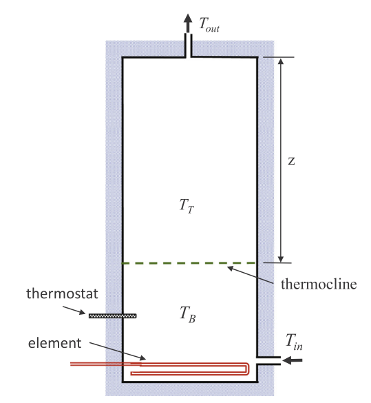
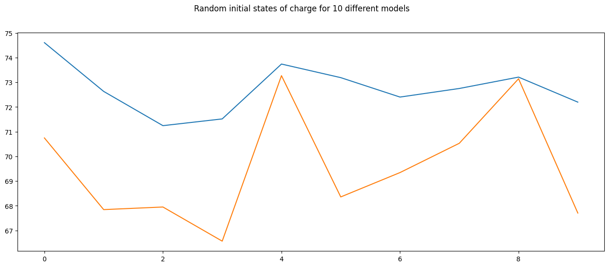
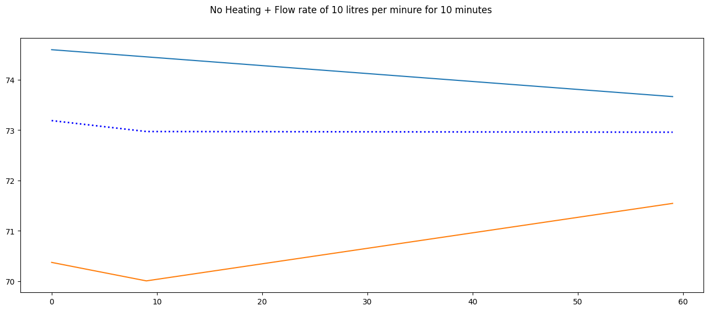
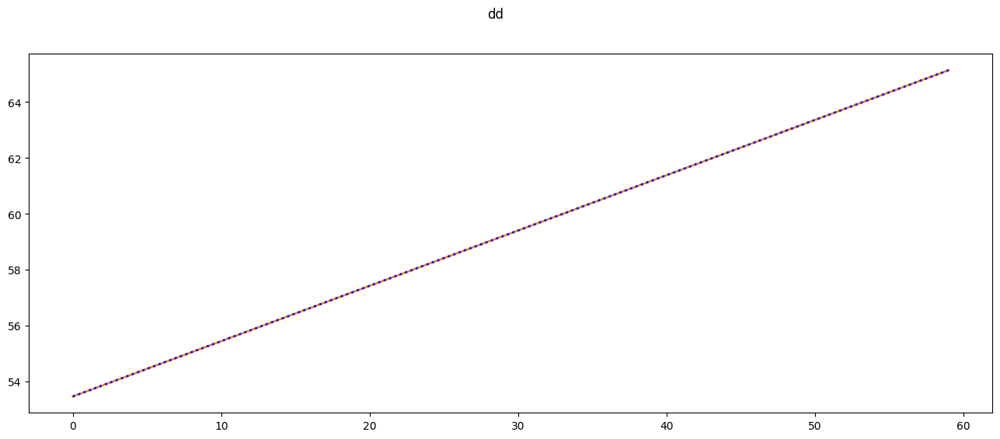

env = HWC(T_set=55, element=3)
temp = []
for step in range(60):
env._update_model(action = 1, flow = 0)
# temp0.append(env.temperatures[0])
temp.append(env.temperatures.copy())
# print(env.temperatures, env.z, env.stratified)
# env.step(flow=0.03)
# print(env.temperatures, env.z, env.stratified)
# env.step(action=1,flow=0)
# print(env.temperatures, env.z, env.stratified)
# env.step(action=1)
# print(env.temperatures, env.z, env.stratified)Basic A minimal simulation of a domestic hot water cylinder
A minimal simulation of a domestic hot water cylinder
In order to simulate aleternative control strategies a hot water cylinder environment that approximates the operation under real world conditions is required. There are a large number of models of varying numerical complexity that were reviewed such as:
Model Predictive Control of Heat Pump Water Heaters for Energy Efficiency
These models have been developed to incorporate stratification and internal heat transfer however a simple energy balance model was selected with the addition of an internal conduction variable to decay the stratified layer.
A minimal simulation of the electricity demand of a domestic hot water cylinder for smart control
\(\Delta \quad\) internal heat transfer scaling parameter
\(\dot{m}_{c} \quad\) mass flow rate of IHX coil fluid
\(\dot{m}_{c w} \quad\) mass flow rate of inlet domestic cold water
\(\dot{m}_{t} \quad\) discharge mass flow rate through tank
\(\dot{Q}_{\text {coil }} \quad\) heat transfer rate due to IHX coil
\(\dot{Q}_{j+1}\) heat transfer rate between nodes \(j\) and \(j+1\)
\(\dot{Q}_{j-1} \quad\) heat transfer rate between nodes \(j\) and \(j-1\)
\(\dot{Q}_{\text {wall }}\) heat transfer rate for losses to surroundings
A cross-sectional area of node control volume
\(A_{w} \quad\) wall contact surface area
\(c_{v} \quad\) specific heat capacity of water
\(j \quad\) current node in iterative energy equations
\(j+1 \quad\) represents node below node \(j\)
\(\begin{array}{ll}j-1 & \text { represents node above node } j \\ k & \text { internal node interaction heat transfer coefficient } \\ k_{w} & \text { lumped heat transfer coefficient for losses across walls } \\ m & \text { mass of node } \\ s_{1} & \text { discharge fluid correction factor } \\ T & \text { temperature } \\ t & \text { time } \\ T_{c w} & \text { domestic cold water temperature } \\ T_{e n} & \text { IHX coil fluid inlet temperature } \\ T_{e x} & \text { IHX coil fluid outlet temperature } \\ w_{t} & \text { tank wall thickness } \\ z & \text { vertical height variable with respect to tank bottom }\end{array}\)
HWC
HWC (element=3, T_set=75, T_deadband=2, T_cold=15, T_inlet=15, radius=0.25, height=1.1, K=0.05, U=0.8, noisey=True)
Model of a Hot Water Cylinder using a nodal approach.
| Type | Default | Details | |
|---|---|---|---|
| element | int | 3 | kW |
| T_set | int | 75 | °C |
| T_deadband | int | 2 | °C |
| T_cold | int | 15 | °C |
| T_inlet | int | 15 | °C |
| radius | float | 0.25 | m |
| height | float | 1.1 | m |
| K | float | 0.05 | m |
| U | float | 0.8 | |
| noisey | bool | True |

expected_temp_rise = 3 / (env.volume * env.ρ * env.Cv) * 60 *60
wall_losses = env.surface_area * env.U * (np.vstack(temp).mean() - env.T_ambient) * 60/1000 # countinuous load in W x h
print(wall_losses)
print(f'Expected temperature rise = {expected_temp_rise:.1f}')
print(f'Model temperature change = {temp[-1].mean() - temp[0].mean():.1f}°C')0.07678544197859781
Expected temperature rise = 12.0
Model temperature change = 11.7°Cexpected_temp_rise = 3 / (env.volume * env.ρ * env.Cv) * 60 *60
wall_losses = env.surface_area * env.U * (np.vstack(temp).mean() - env.T_ambient) * 60/1000 # countinuous load in W x h
print(f'Expected temperature rise = {expected_temp_rise-wall_losses:.1f}')
print(f'Model temperature change = {temp[-1].mean() - temp[0].mean():.1f}°C')Expected temperature rise = 11.9
Model temperature change = 11.7°CModel Operation
Initialisation
temp = []
for i in range(10):
env = HWC(T_set=75, element=3)
temp.append(env.temperatures)
assert env.temperatures[0]<= 75.5
fig, ax = plt.subplots(figsize=(16,6))
ax.plot(np.vstack(temp))
fig.suptitle('Random initial states of charge for 10 different models')Text(0.5, 0.98, 'Random initial states of charge for 10 different models')
env = HWC(T_set=75, element=3, height=1, radius=.5)
# check that the volume and areas are correct
assert env.volume == np.pi/4
assert env.A == np.pi/4Passive Losses - No Heating + No Flow
env = HWC(T_set=55, element=3, radius=.25, U=1)
temp = []
minutes = 60*24
for minute in range(minutes):
env._update_model(action = 0 , flow = 0)
temp.append(env.temperatures)Compare to calulation from first principles
mean_cylinder_temperature = (np.vstack(temp)* env.split).sum(axis=1).mean()
passive_real = env.U * env.surface_area * (mean_cylinder_temperature - env.T_ambient) # kW/m2K x m2 x K = KW
passive_real = passive_real * 60 * 24 / 1000 # kWh per day
model_losses = env.volume * env.ρ * env.Cv * ((temp[0]* env.split).sum()- (temp[-1]* env.split).sum()) / 1000
print(f'Calculated Passive losses: {passive_real/24:.2f} kWh / hour and a total of {passive_real:.2f} kWh / day')
print(f'Model Losses: minutes {model_losses:.2f} kWh / hour and a total of {model_losses:.2f} kWh / day')Calculated Passive losses: 0.08 kWh / hour and a total of 1.85 kWh / day
Model Losses: minutes 0.00 kWh / hour and a total of 0.00 kWh / dayfig, ax = plt.subplots(figsize=(16,6))
ax.plot(np.vstack(temp))
ax.plot((np.vstack(temp)*env.split).sum(axis=1), lw=2, ls=':', c='blue')
fig.suptitle(f'Passive Losses - No Heating + No Flow over {minutes} minutes')Text(0.5, 0.98, 'Passive Losses - No Heating + No Flow over 1440 minutes')
The standing heat loss for a tank should be in the order of 1.7 kWh / day for a tank at 55 degrees. https://sustainableengineering.co.nz/portfolio-item/dhw-tanks-w-k-from-kwh-day/
No Heating + Flow rate of 10 litres per minure for 10 minutes
env = HWC(T_set=75, element=3)
flow = 10/60/1000 # 10 litres per minute
temp = []
minutes = 60
for minute in range(minutes):
action = 0 #np.random.randint(0,2)
env._update_model(action = action , flow = flow if minute < 10 else 0)
temp.append(env.temperatures.copy())
fig, ax = plt.subplots(figsize=(16,6))
ax.plot(np.vstack(temp))
ax.plot((np.vstack(temp)*env.split).sum(axis=1), lw=2, ls=':', c='blue')
fig.suptitle('No Heating + Flow rate of 10 litres per minure for 10 minutes')Text(0.5, 0.98, 'No Heating + Flow rate of 10 litres per minure for 10 minutes')
Heating Bottom Element + No Flow
env = HWC(T_set=55, element=3)
temp = []
minutes = 60
for minute in range(minutes):
env._update_model(action = 1 , flow = 0)
temp.append(env.temperatures.copy())
fig, ax = plt.subplots(figsize=(16,6))
ax.plot(np.vstack(temp))
ax.plot((np.vstack(temp)*env.split).sum(axis=1), lw=2, ls=':', c='blue')
fig.suptitle('dd')Text(0.5, 0.98, 'dd')
# In 1 hour
Tfinal = 3600 * env.element / (env.volume * env.ρ * env.Cv) + temp[0].mean()
print(f'Expected temperature rise = {Tfinal:.1f}')
print(f'Model final temperature = {(temp[-1]*env.split).sum():.1f}°C')Expected temperature rise = 65.4
Model final temperature = 65.1°C